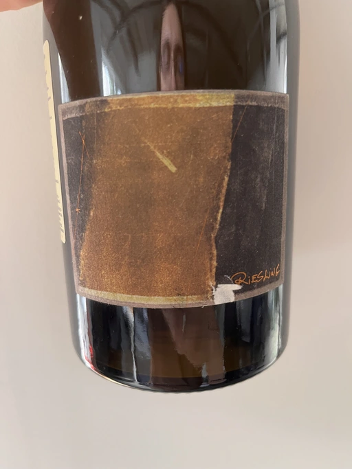

- Type
- White Still, Dry
- Producer
- Bencze
- Vintage
- 2019
- Location
- Hungary, Balatonfelvidék OFJ
- Grapes
- Riesling
- Alcohol
- 11.5
- Sugar
- 3.7
- Price
- 603 UAH
- Cellar
- N/A
Ratings
2022-08-18 - 7.75
Not as crazy as I remember it. Or maybe I become crazier, and my “waterline” move upper. Who knows? Smells like benzol mixed with apples, pears, lemon, yeast, and pickles. No, wait, just one pickle. Acidity is so high that this wine resurrected Jesus. But the most beautiful part is the aftertaste full of salted oranges.